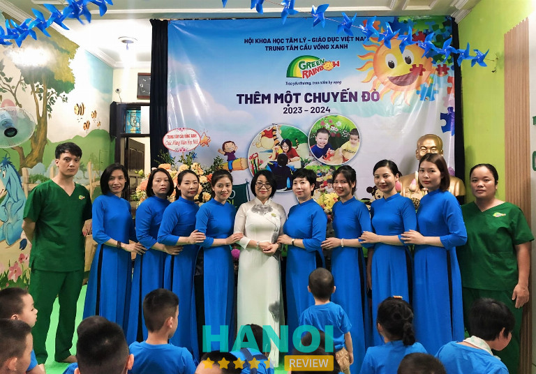
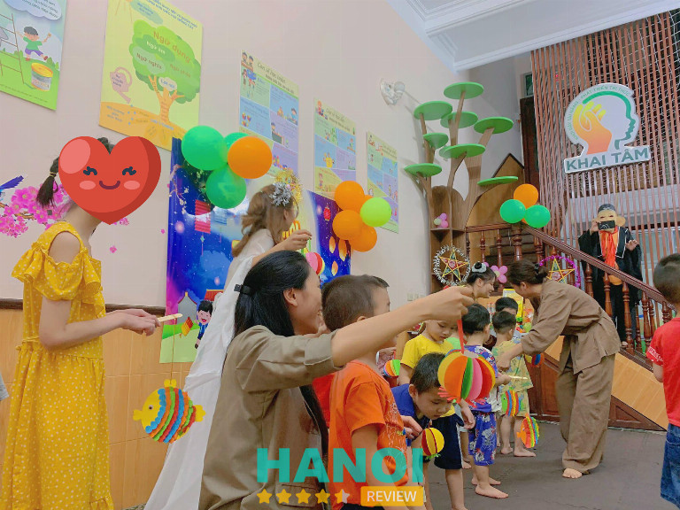
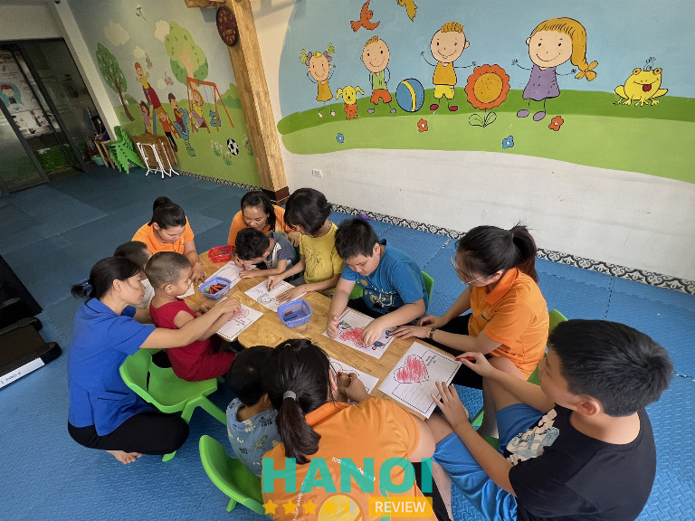
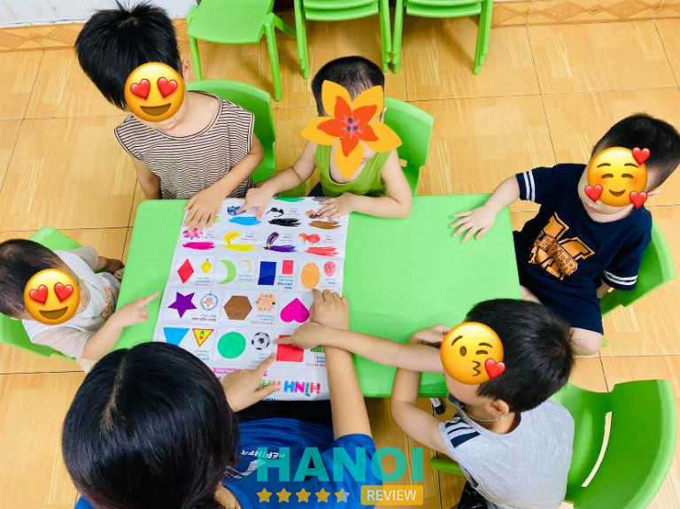
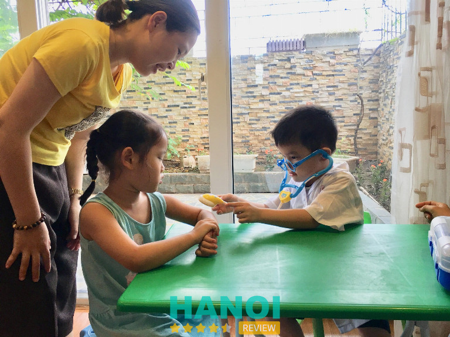
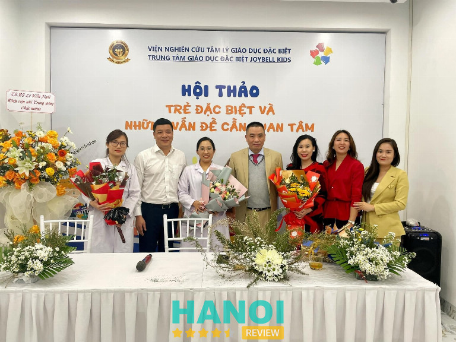
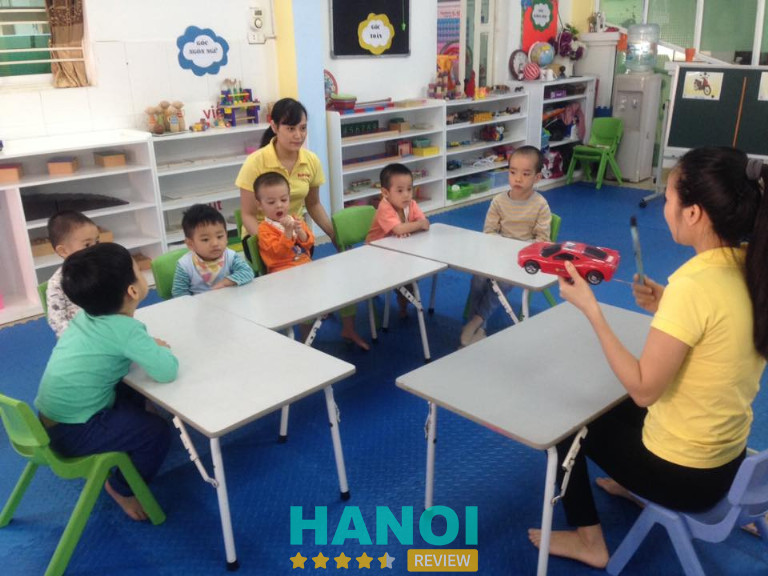

10 Trung tâm can thiệp trẻ tăng động giảm chú ý tại Hà Nội uy tín, tận tâm
Các trung tâm can thiệp trẻ tăng động giảm chú ý tại Hà Nội đang thu hút sự quan tâm của những bậc phụ huynh có con em mắc bệnh. Nếu con bạn cũng cần điều trị, hãy tìm hiểu thật kỹ trước khi quyết định để trẻ nhanh chóng hết bệnh và tự tin hòa nhập với cộng đồng.
Top 10 Trung tâm can thiệp trẻ tăng động giảm chú ý tại Hà Nội uy tín, giáo viên tận tâm
Chắc hẳn nhiều cha mẹ đang đau đầu trong việc chọn ra một cơ sở uy tín để điều trị cho bé nhà mình, bởi vì có hàng chục trung tâm giáo dục cho trẻ em đặc biệt tại Hà Nội. Vậy, các bậc phụ huynh có thể tham khảo danh sách 5 trung tâm can thiệp trẻ tăng động giảm chú ý tốt nhất trên địa bàn thành phố của HaNoiReview.
Trung tâm Tâm lý Giáo dục chuyên biệt NHC Việt Nam – NHC Academy
Trung tâm Tâm lý Giáo dục chuyên biệt NHC Việt Nam là trung tâm giáo dục trẻ em đặc biệt uy tín, chất lượng tốt nhất thành phố Hà Nội. Đây là đơn vị trực thuộc Viện Nghiên cứu Tâm lý và Phát triển Con người.
Tại đây, trẻ sẽ được các chuyên gia kiểm tra trực tiếp để đánh giá mức độ bệnh tình. Từ đó, đưa ra phương hướng trị liệu để có được hiệu quả cao nhất, và phù hợp với từng trẻ. Chương trình chăm sóc, dạy trẻ của cơ sở được công nhận là đạt chuẩn quốc tế.
Bên cạnh sự kết hợp giữa khoa học vận động – giáo dục – tâm lý, trung tâm còn sử dụng phương pháp trị liệu bằng âm nhạc, châm cứu, giáo cụ,… giúp trẻ tăng khả năng tập trung, và kiểm soát tốt hành vi của bản thân.

NHC Academy sở hữu các giáo viên, chuyên gia có trình độ cao, giàu kinh nghiệm, thương yêu trẻ em và biết cách áp dụng các phương pháp can thiệp mới nhất, giúp trẻ sớm tái hòa nhập cộng đồng, hỗ trợ trẻ bứt phá mọi rào cản để phát triển theo hướng toàn diện nhất.
Trung tâm còn tạo ra không gian lý tưởng cho trẻ học hỏi, vui chơi, tích lũy kỹ năng sống bổ ích. Cơ sở vật chất cũng được chú trọng ứng dụng công nghệ tiên tiến, hiện đại; các phòng chức năng rộng rãi, sạch sẽ, và đều có giáo cụ, thiết bị cần thiết cho quá trình can thiệp.
Mỗi ngày đến điều trị, trẻ sẽ được theo dõi sát sao, và gửi kết quả về cho phụ huynh. Bên cạnh đó, trung tâm còn tận tâm hướng dẫn cách chăm sóc, dạy trẻ tại nhà cho cha mẹ, để quá trình phục hồi chức năng, trị liệu được rút ngắn thời gian, và đạt hiệu quả đúng mong muốn của gia đình.
Do đó, NHC Academy đã trở thành địa chỉ đồng hành cùng trẻ em tăng động trong nhiều năm qua, và được nhiều quý phụ huynh trao trọn niềm tin.
Khung giờ làm việc từ 8h00 – 18h00, hoạt động từ thứ Hai đến Chủ Nhật.
Thông tin liên hệ:
- Địa chỉ: 235, Phố Quan Hoa, Q. Cầu Giấy, Hà Nội
- Điện thoại: 0906.818.123
- Email: giaoducnhc@gmail.com
- Website: giaoducnhc.vn
- Fanpage: FB.com/giaoducnhc/
Trung tâm Nghiên cứu Ứng dụng Tâm lý – Giáo dục Cầu Vồng Xanh
Hoạt động từ năm 2009 đến nay, Trung tâm Cầu Vồng Xanh đã can thiệp thành công cho hơn hàng chục trẻ em tăng động giảm tập trung, giúp trẻ xóa bỏ hội chứng, phá vỡ rào cản, và phát triển từ tư duy đến thể chất.
Cầu Vồng Xanh triển khai đa dạng loại hình như: can thiệp cá nhân, can thiệp theo nhóm, và can thiệp hòa nhập, nhằm giúp trẻ nhanh chóng hòa nhập trở lại với xã hội. Đặc biệt là các phương pháp giúp cải thiện khả năng tập trung.
Đội ngũ giáo viên đã được đào tạo bài bản, nắm vững kiến thức chuyên môn, và giàu kinh nghiệm. Cùng với sự tận tình, tận tâm, liên tục cập nhật và làm mới phương pháp giáo dục, chăm sóc phù hợp với mức độ của từng trẻ nhằm đảm bảo mang lại hiệu quả trong thời gian sớm nhất.

Trẻ can thiệp tại trung tâm sẽ được tận hưởng tất cả các trang thiết bị, dụng cụ học tập tiên tiến và chất lượng cao. Nhằm hỗ trợ tốt nhất cho quá trình phục hồi, và phát triển của trẻ.
Các lớp học được thiết kế rộng rãi, mát mẻ, loại bỏ tối đa mọi yếu tố chi phối sự tập trung của trẻ. Không chỉ vậy, Cầu Vồng Xanh còn chú trọng quan tâm đến chế độ dinh dưỡng trong khẩu phần ăn của trẻ.
Trẻ giảm chú ý sẽ nâng cao khả năng tập trung sau thời gian học, và trị liệu chuyên sâu tại trung tâm. Phụ huynh sẽ được trao đổi cụ thể về quy trình can thiệp, báo cáo kết quả, và hướng dẫn một số phương pháp nuôi dạy trẻ tại nhà.
Trung tâm Cầu Vồng Xanh luôn đặt giáo dục cho trẻ em làm ưu tiên hàng đầu kể từ thành lập. Chính vì thế, cơ sở đã trở thành lựa chọn số 1 của những gia đình có con em mắc chứng tăng động, giảm chú ý.
Giờ làm việc 7h30 – 17h30, hoạt động từ thứ Hai đến thứ Bảy.
Thông tin liên hệ:
- Địa chỉ: 1 Ngõ 30 Cát Linh, Q. Đống Đa, Hà Nội
- Điện thoại: 0902.202.909
- Email: mncauvongxanh@gmail.com
- Website: truongtretuky.edu.vn
- Fanpage: FB.com/truongtretuky.edu.vn/
Trung tâm Nghiên cứu và Ứng dụng Tâm lý – Giáo dục Khai Tâm
Trung tâm Khai Tâm được thành lập với sứ mệnh can thiệp, giúp đỡ trẻ em tăng động, giảm chú ý sớm phục hồi chức năng, tự tin hòa nhập với môi trường xung quanh, và học tập tốt hơn.
Cơ sở vật chất cũng được đầu tư ứng dụng công nghệ cao, và có đầy đủ tiện nghi. Các phòng học, phòng chức năng được xây dựng thoáng đãng, sáng sủa, và có trang bị máy móc, giáo cụ cần thiết cho quá trình phục hồi, giảng dạy.
Phương pháp đào tạo đang được áp dụng tại cơ sở Khai Tâm:
- Kết hợp giữa giảng dạy tập trung với can thiệp cá nhân nhằm hỗ trợ trẻ nâng cao khả năng tập trung, và ứng xử phù hợp, đúng chuẩn mực.
- Xây dựng môi trường phát triển toàn diện từ thể chất, hành vi, nhận thức, cảm xúc, khả năng giao tiếp, ngôn ngữ, học tập, tự sinh hoạt.
- Mở các lớp dạy kỹ năng sống, lớp tiền tiểu học, lớp toán học, lớp rèn chữ đẹp, và tổ chức các hoạt động ngoại khóa thú vị, vui nhộn cho trẻ tham gia, và học hỏi.
- Đào tạo, tập huấn cho phụ huynh để cùng hỗ trợ với trung tâm, giúp trẻ nhanh chóng hoà nhập, và hoàn thiện bản thân.

Đội ngũ giảng viên đứng lớp tại đây đều có trình độ từ Cao đẳng đến Cao học, có nhiều kinh nghiệm thực tiễn, tận tụy với nghề và luôn yêu thương, kiên nhẫn với trẻ. Trung tâm cũng tạo cơ hội để trau dồi chuyên môn, tiếp thu phương pháp giảng dạy mới, để giúp các em tích lũy được nhiều kiến thức, và kỹ năng cần thiết cho cuộc sống sau này.
Trung tâm Nghiên cứu và Ứng dụng Tâm lý – Giáo dục Khai Tâm nỗ lực mang đến lộ trình điều trị phù hợp, rõ ràng với mức độ khác nhau của mỗi trẻ và thường xuyên điều chỉnh để tìm ra giải pháp hiệu quả nhất.
Sau nhiều năm hoạt động cho đến hiện tại, trung tâm đã trị liệu thành công cho hàng trăm trẻ tăng động, chậm phát triển, khiếm khuyết trí tuệ, tự kỷ,… Vì thế, nơi đây nhận được rất nhiều sự tín nhiệm từ đông đảo bậc phụ huynh có nhu cầu cải thiện tình trạng bệnh của con em mình.
Thời gian mở cửa từ 7h30 – 17h00, làm việc từ thứ Hai đến thứ Bảy.
Thông tin liên hệ:
- Địa chỉ: 65, Ngõ 1, Tập thể Trung đoàn 17, H. Thanh Trì, Hà Nội
- Điện thoại: 0378.298.355
- Email: canthiepsomkhaitam@gmail.com
- Website: giaoduckhaitam.vn
- Fanpage: FB.com/giaoduckhaitam.vn/
Trung tâm Nghiên cứu và Ứng dụng Tâm lý – Giáo dục Ngọc Ân
Trung tâm giáo dục đặc biệt Ngọc Ân chuyên sàng lọc, phát hiện, và can thiệp sớm cũng như hỗ trợ hòa nhập cho trẻ em đặc biệt. Cơ sở hướng tới sự phát triển, và trui rèn kỹ năng cá nhân cho trẻ thông qua các chương trình can thiệp sớm đã được thẩm định và ban hành bởi Bộ Giáo dục và Đào tạo.
Các chương trình can thiệp được xây dựng phù hợp với đối tượng trẻ em tăng động trong độ tuổi từ 18- 72 tháng, theo hai hình thức: cá nhân và nhóm. Thông qua các bài đánh giá đầu vào, và bài kiểm tra năng lực định kỳ, giảng viên của trung tâm sẽ xếp từng trẻ vào các lớp học tương thích, và điều chỉnh phương pháp can thiệp để mang lại hiệu quả cao nhất.
Ngoài ra, còn thường xuyên tổ chức các chương trình hướng nghiệp cho người tự kỷ và khuyết tật nhằm tạo cơ hội trực tiếp trải nghiệm các công việc phù hợp với năng lực cá nhân. Việc làm này giúp họ kiếm thêm thu nhập, đồng thời khẳng định bản thân họ cũng là người có ích cho xã hội.

Đội ngũ thầy cô giáo đang công tác tại trung tâm Ngọc Ân đều đã tích lũy nhiều năm kinh nghiệm trong lĩnh vực can thiệp ở trẻ em đặc biệt, thấu hiểu tâm lý, đặc trưng của trẻ suy giảm khả năng tập trung, và luôn biết cách thu hút chú ý của trẻ.
Hệ thống phòng học, phòng trị liệu được xây dựng rộng rãi, sáng sủa, màu sắc, và có đủ giáo cụ, công cụ học tập thiết yếu. Bên cạnh đó, cơ sở vật chất, máy móc, thiết bị cũng được đầu tư ứng dụng công nghệ tiên tiến, hiện đại.
Trung tâm Ngọc Ân hoàn toàn miễn phí, hay giảm 20 – 50% chi phí can thiệp cho các gia đình khó khăn về kinh tế. Khung giờ can thiệp cá nhân: từ 7h50 – 17h00, chi phí 180.000/60 phút, và thời gian ngoài giờ: từ 17h00 – 20h00, chi phí 200.000/60 phút.
Thông tin liên hệ:
- Địa chỉ: 51, Liền kề 6, KĐT An Hưng, P. Dương Nội, Q. Hà Đông, Hà Nội
- Điện thoại: 0769.265.656
- Email: info@ngocan.com.vn
- Website: tukybinhminh.com
- Fanpage: FB.com/Trungtamngocan/
Trung tâm Tâm lý – Giáo dục An Nguyên
Trung tâm tâm lý – giáo dục An Nguyên cung cấp dịch vụ thăm khám, đánh giá và can thiệp ở các trẻ em đặc biệt. Cơ sở được rất nhiều người đánh giá cao về chương trình giảng dạy và quy trình chăm sóc sức khỏe cho trẻ em tăng động.
Mỗi trẻ sẽ được cá nhân hóa lộ trình can thiệp nhằm có được những kết quả tốt nhất trong thời gian ngắn. Trẻ còn được tham gia các lớp phát triển kỹ năng sống, kỹ năng sinh hoạt,… kết hợp với các trò chơi thú vị nên trẻ tăng động cực kỳ thích thú. Vậy nên, buổi học nào tại đây cũng đều tràn ngập tiếng cười nói vui vẻ.
Giáo viên, chuyên gia tại đây đều là những người có thâm niên trong lĩnh vực nuôi dạy trẻ em tự kỷ, tăng động giảm chú ý, kém phát triển trí tuệ, chậm nói,… cùng với thái độ nhiệt tình, kiên trì, nhẫn nại trong quy trình chăm sóc sức khỏe, và giảng dạy.

Thế mạnh của An Nguyên là kết hợp các phương pháp can thiệp tiêu chuẩn song song với ứng dụng tâm lý để trị liệu nên trẻ em tăng động giảm chú ý luôn cảm thấy thoải mái, chăm chú làm theo thầy cô, nhờ đó mà có những thay đổi rõ rệt sau mỗi lớp học.
Không gian tại trung tâm được xây dựng rộng rãi, sạch sẽ, và do chính các bé trang trí theo những chủ đề như: lễ Giáng Sinh, tết Trung Thu, tết Nguyên Đán,… đảm bảo môi trường an toàn cho trẻ tăng động học tập, vui chơi, và phát triển.
Mọi hoạt động trong liệu trình can thiệp sẽ được cập nhật liên tục để phụ huynh thuận tiện trong việc theo dõi. Ngoài ra,trung tâm còn mở các buổi tham vấn, tập huấn cho các cha mẹ về các phương pháp chăm sóc, dạy trẻ tại nhà.
Thông tin liên hệ:
- Địa chỉ: 12B, Ngách 117/18 Nguyễn Sơn, P. Gia Thuỵ, Q. Long Biên, Hà Nội
- Điện thoại: 0868.928.323
- Email: tamlygiaoducannguyen@gmail.com
- Website: giaoduckhaitam.vn
- Fanpage: FB.com/p/Trung-Tâm-Tâm-Lý-Giáo-dục-An-Nguyên-100027247102572/
Xem thêm: 10 Trung tâm dạy trẻ chậm nói tại Hà Nội uy tín, tận tâm, chuyên nghiệp
Trung tâm can thiệp sớm Đăng Minh
Trung tâm can thiệp Đăng Minh là một trong những cơ sở can thiệp trẻ tăng động, giảm chú ý uy tín đứng đầu thành phố Hà Nội. Hoạt động từ năm 2010 đến nay, trung tâm đã gặt hái được sự tin tưởng và hài lòng từ các quý phụ huynh có con em mắc chứng rối loạn tăng động giảm tập trung, tự kỷ, chậm nói,…
Sở hữu đội ngũ giáo viên có năng lực chuyên môn cao, nhiều năm kinh nghiệm, và nắm vững các phương pháp giảng dạy tiêu chuẩn. Họ sẽ trực tiếp đưa ra chương trình can thiệp phù hợp và hiệu quả nhất dựa trên mức độ tăng động, giảm chú ý của từng trẻ.
Trung tâm còn xây dựng một số bài tập giúp trẻ tập trung tốt hơn, theo kịp nhịp độ với các bạn cùng lớp. Bên cạnh đó, các chuyên gia tại trung tâm còn cung cấp toàn bộ kiến thức về chứng tăng động giảm chú ý, và hướng dẫn các phương pháp can thiệp tại nhà cho cha mẹ.
Nếu không an tâm để con điều trị tại trung tâm thì phụ huynh có thể chọn dịch vụ mời giáo viên can thiệp đến nhà. Trung tâm đảm bảo thực hiện mọi công đoạn từ thăm khám sơ bộ, đánh giá tình trạng cho đến tiến hành các phương pháp can thiệp.

Các phòng học được trang bị đầy đủ tiện nghi, dụng cụ học tập,.. nhằm xây dựng không gian lý tưởng để trẻ học tập tốt hơn, va chạm thực tế, giúp trẻ phá bỏ giới hạn, và nâng cao khả năng tập trung.
Trung tâm can thiệp sớm Đăng Minh luôn tạo mọi điều kiện, tận tâm hỗ trợ cho sự phát triển toàn diện của trẻ em đặc biệt. Vì vậy, được nhiều phụ huynh lựa chọn để gửi gắm con mình.
Mức học phí can thiệp ở trẻ tăng động giảm chú ý còn tùy thuộc vào tình trạng bệnh, độ tuổi của mỗi trẻ, và cả kinh nghiệm của giáo viên. Nếu có nhu cầu, bạn có thể tìm đến hoặc liên lạc với trung tâm để được hỗ trợ tốt nhất.
Thông tin liên hệ:
- Địa chỉ: Chung cư Kim Văn Kim Lũ, P. Đại Kim, Q. Hoàng Mai, Hà Nội.
- Điện thoại: 0979.481.988
- Email: giasuhanoigioi.edu.vn@gmail.com
- Website: canthiepdangminh.vn/
- Fanpage: FB.com/canthiepsomdangminh/
Trung tâm chuyên biệt Bình Minh
Địa chỉ tiếp theo mà HaNoiReview muốn giới thiệu đến bạn, chính là Trung tâm chuyên biệt Bình Minh. Xuất hiện trên địa bàn Hà Nội từ tháng 2/2016, cơ sở đã giúp rất nhiều trẻ em mắc chứng tự kỷ, chậm phát triển, tăng động giảm chú ý,.. vượt qua chứng bệnh, và phát triển toàn diện.
Chương trình can thiệp tại đây được thiết kế chuyên sâu bởi đội ngũ giáo viên, chuyên gia dày dặn kinh nghiệm trong lĩnh vực giáo dục đặc biệt. Họ luôn nỗ lực để xây dựng cho mỗi trẻ một lộ trình phù hợp với tình trạng bệnh, nhằm đẩy nhanh tiến độ phục hồi, và rèn luyện cho trẻ nhiều kỹ năng thiết thực.
Các phương pháp được áp dụng đều đã qua thử nghiệm, và hỗ trợ thành công nhiều trẻ suy giảm tập trung cải thiện đáng kể khả năng chú ý. Sau giờ học, trẻ được tham gia vào các trò chơi tập thể nhằm rèn luyện kỹ năng giao tiếp, kết bạn và làm việc nhóm.
Môi trường học và chơi của trẻ cũng được quan tâm hàng đầu, được xây dựng rộng rãi thích hợp với trẻ tăng động, và an toàn vệ sinh. Giáo cụ, trang thiết bị hiện đại giúp trẻ kích thích bản năng khám phá, tìm tòi đồng thời tăng cường sự tập trung, và kiểm soát hành vi tốt hơn.
Ngoài ra, trung tâm liên kết chặt chẽ với gia đình để chia sẻ, chỉ dẫn những phương pháp can thiệp thêm tại nhà, tạo điều kiện cho trẻ được tu dưỡng tại trung tâm và cả khi ở nhà. Các bài tập sẽ được cá nhân hóa dựa theo hành vi và mức độ nặng/nhẹ của từng trẻ.
Thời gian làm việc từ 7h30 – 16h30.
Thông tin liên hệ:
- Địa chỉ: 26, Ngõ 126 Khuất Duy Tiến, Q. Thanh Xuân, Hà Nội
- Điện thoại: 0948.866.881
- Email: tukybinhminh@gmail.com
- Website: tukybinhminh.com
- Fanpage: FB.com/100054211914753/
Trung tâm hỗ trợ và phát triển giáo dục hòa nhập Trí Đức
Kể từ thành lập vào năm 2012, Trung tâm Trí Đức đã giúp cho rất nhiều trẻ em đặc biệt tự tin tái hòa nhập cộng đồng. Chương trình giáo dục tại đây thích hợp cho mọi khiếm khuyết phát triển nên các phụ huynh có thể yên tâm gửi gắm con em mình.
Mỗi trẻ đến với cơ sở sẽ được thăm khám bởi các bác sĩ, chuyên gia đầu ngành đang làm việc tại Bệnh viện Nhi Trung Ương, Viện Bạch Mai, Viện Đại Học Y,… Họ sẽ dựa vào kết quả của từng trẻ để sắp xếp các em vào các lớp, và xây dựng lộ trình học tập, điều trị phù hợp, nhằm đem tới những tiến bộ rõ ràng sau mỗi giai đoạn.
Trung tâm Trí Đức cung cấp chương trình can thiệp cho trẻ em giảm chú ý theo nhiều hình thức: can thiệp trực tiếp tại trường mầm non, bán trú, trị liệu tại nhà theo giờ, hoặc các lớp dạy kỹ năng giao tiếp, lớp tiền tiểu học.Cơ sở Trí Đức am kết trẻ sẽ thay đổi theo chiều hướng tích cực trong tư duy, hành vi, và có thêm các kỹ năng cần thiết.

Cứ mỗi tháng, trẻ sẽ được kiểm tra để đánh giá năng lực, và gửi kết quả cho phụ huynh thấy được những chuyển biến tốt ơ trẻ sau thời gian can thiệp. Trung tâm còn có các chương trình theo dõi trẻ từ xa, hay tham vấn cho phụ huynh phương pháp nuôi dạy hiệu quả tại nhà. Dịch vụ khám và tư vấn tại đây cũng được đánh giá cao về độ chính xác.
Hệ thống phòng học, phòng chức năng, phòng hoạt động nhóm, phòng can thiệp cá nhân… được lắp đặt đầy đủ máy móc, thiết bị thiết yếu cho quá trình chăm sóc, giảng dạy. Ngoài ra, không gian trung tâm cũng rất khang trang, và tiện nghi.
Phương châm của Trí Đức là tạo ra một môi trường tốt nhất để trẻ em đặc biệt có thể phát huy hết khả năng cá nhân, và có những đổi mới tích cực, hoàn thiện bản thân mỗi ngày.
Khung giờ hoạt động từ 6h00 – 17h00, mở cửa từ thứ Hai đến thứ Bảy.
Thông tin liên hệ:
- Địa chỉ: 200, Ngõ 264 Ngọc Thụy, Q. Long Biên, Hà Nội.
- Điện thoại: 0974.998.237
- Email: tukytriduc@gmail.com
- Website: tukybinhminh.com/
Trung tâm giáo dục đặc biệt Joybell Kids
Một địa chỉ không thể bỏ qua khi nói đến những cơ sở giáo dục đặc biệt tại Hà Nội, đó là Trung tâm Joybell Kids. Đơn vị chuyên cung cấp dịch vụ can thiệp ở trẻ tăng động giảm chú ý, chậm phát triển, tự kỷ, rối loạn ngôn ngữ,…
Sau khi kiểm tra và đánh giá, các chuyên gia sẽ thực hiện cá nhân hóa chương trình giảng dạy dựa trên tình trạng của từng trẻ. Vì vậy, trẻ có thể thích nghi tốt với các phương pháp được áp dụng.
Joybell Kids cung cấp 4 loại hình can thiệp cho trẻ tăng động giảm chú ý, bao gồm can thiệp cá nhân, theo nhóm, can thiệp bán trú và can thiệp tại nhà (trong nội thành Hà Nội).

Trung tâm cam kết trẻ sẽ được hỗ trợ, nuôi dạy bởi những giáo viên có nhiều năm kinh nghiệm, năng lực chuyên môn cao, và tấm lòng yêu thương trẻ em. Ngoài ra, còn có giáo viên theo dõi sát sao để trẻ không tự gây nguy hiểm bằng những hành vi tăng động, thiếu kiểm soát của mình.
Chế độ dinh dưỡng cho những trẻ điều trị bán trú cũng được thiết kế khoa học, nhằm đảm bảo sức khỏe, hạn chế xảy ra dị ứng hoặc ảnh hưởng xấu đến não bộ. Các hoạt động ngoại khóa được tổ chức thường xuyên để trẻ thực hành các kỹ năng sinh hoạt, hay kỹ năng tự vệ đã học.
Với hệ thống vật chất hiện đại, đa tiện ích, và dụng cụ bổ trợ tân tiến, trung tâm luôn mang đến cho trẻ tăng động không gian thoải mái vui chơi, và học tập.
Đặc biệt, trung tâm còn xây trần tiêu âm trong các phòng học, nhằm đảm bảo độ yên tĩnh tuyệt đối để trẻ tăng khả năng chú ý, không bị thu hút bởi các yếu tố bên ngoài.
Thời gian mở cửa từ 7h00 – 21h00, làm việc từ thứ Hai đến thứ Bảy.
Thông tin liên hệ:
- Địa chỉ: 4, Ngõ 104 Phố Nguyễn Phúc Lai, P. Ô Chợ Dừa, Q. Đống Đa, Hà Nội
- Điện thoại: 0961.181.294
- Email: tukytriduc@gmail.com
- Website: tukybinhminh.com
Trường mầm non Newstar
Trường mầm non NewStar Hà Nội là cơ sở can thiệp trẻ tăng động giảm chú ý cuối cùng góp mặt trong danh sách. Đây là trường mầm non chuyên biệt giúp trẻ tự kỷ, rối loạn ngôn ngữ, kém tập trung,… cải thiện tình trạng, xóa bỏ giới hạn, từ đó mạnh dạn hòa nhập với cộng đồng.
Phụ huynh đưa trẻ đến trường can thiệp sẽ được trao đổi cụ thể về tình trạng tăng động, và tư vấn phương pháp giảng dạy phù hợp, hỗ trợ hiệu quả cho quá trình khôi phục chức năng, và phát triển toàn diện.
Chương trình can thiệp được biên soạn chi tiết, phù hợp với từng mức độ của mỗi trẻ. Nhà trường còn cung cấp thêm thông tin về chương trình chăm sóc, nuôi dạy tại nhà cho phụ huynh, nhằm đẩy nhanh thời gian phục hồi, để trẻ sớm theo kịp bạn bè trang lứa.

Hiện tại, Mầm non Newstar đang áp dụng các phương pháp can thiệp, trị liệu sau:
- ABA (Phân tích hành vi ứng dụng)
- PECS (Hệ thống giao tiếp trao đổi tranh ảnh)
- TEACCH (Trị liệu và giáo dục trẻ tự kỷ và trẻ khuyết tật về giao tiếp)
- SI (Hòa nhập cảm giác)
- OT (Occupatoin Therapy – Hoạt động tri liệu)
- Social story (câu chuyện xã hội)
- Phương pháp “Trị liệu ngôn ngữ và lời nói”
- Phương pháp hình thành
- Phương pháp xâu chuỗi
- Phương pháp dùng lời nói (trò chuyện, kể chuyện, giải thích)
- Phương pháp trực quan minh họa:
- Phương pháp thực hành: tham gia các trò chơi, luyện tập với thầy cô, bạn cùng nhóm, cùng lớp
- Phương pháp nêu tình huống có vấn đề
- Phương pháp đánh giá, nêu gương
- Phương pháp dùng tình cảm
Trung tâm tự hào sở hữu đội ngũ chuyên gia giáo dục đặc biệt, giảng viên nắm vững trình độ chuyên môn, nhiều kinh nghiệm. Họ đều rất yêu trẻ em, nhiệt huyết với nghề, nhẫn nại, và luôn theo sát để hỗ trợ khi trẻ cần.
Hơn nữa, cơ sở vật chất, và các trang thiết bị, giáo cụ học tập cũng được trung tâm ưu tiên quan tâm, nhằm mang đến một môi trường học tập, vui chơi hoàn hảo cho trẻ em đặc biệt.
Thông tin liên hệ:
- Địa chỉ: 32, Ngõ 204 Trần Duy Hưng, Q. Cầu Giấy, Hà Nội
- Điện thoại: (024)38.343.168
- Email: newstar.eduvn@gmail.com
- Website: newstar.edu.vn
- Fanpage: FB.com/truongmamnonnewstar/
6 Tiêu chí lựa chọn trung tâm can thiệp trẻ tăng động giảm chú ý tại Hà Nội chất lượng cao
Can thiệp trẻ suy giảm khả năng tập trung tại các cơ sở giáo dục đặc biệt kém uy tín, vừa lãng phí thời gian, tiền bạc vừa không có được hiệu quả. Do đó, trước khi lựa chọn, các quý phụ huynh nên tham khảo một số tiêu chí sau:
Thời gian hoạt động lâu năm:
Cha mẹ nên chọn trung tâm đáng tin cậy, đã có thời gian hoạt động lâu năm trên địa bàn thành phố. Bởi vì giữ được độ uy tín thì mới có thể tồn tại vững vàng trên thị trường cạnh tranh hiện nay.
Cá nhân hóa chương trình can thiệp:
Cha mẹ nên chọn trung tâm xây dựng chương trình giảng dạy, chăm sóc riêng biệt, phù hợp với tình trạng bệnh của con em mình, để sớm nâng cao khả năng tập trung, giúp trẻ nhanh chóng hòa nhập, và phát triển một cách toàn diện nhất.
Đội ngũ giáo viên kinh nghiệm:
Cha mẹ nên chọn trung tâm có các thầy cô với năng lực chuyên ngành cao, trách nhiệm, chịu thương chịu khó, và đặc biệt yêu thích trẻ em. Phụ huynh cũng nên theo dõi cặn kẽ thời gian thực hiện can thiệp tại trung tâm, tránh xảy ra tình trạng trẻ bị đánh đập, ngược đãi.
Hệ thống cơ sở vật chất hiện đại:
Cha mẹ nên chọn trung tâm chú trọng vào việc trang bị đầy đủ tiện nghi, và dụng cụ học tập, trị liệu. Hệ thống phòng học, phòng điều trị, khu vực sân chơi đều được xây dựng rộng lớn, sạch sẽ, có ánh sáng, và mát mẻ.
Chi phí phải chăng:
Cha mẹ nên chọn các trung tâm có mức học phí phù hợp với điều kiện kinh tế gia đình, và có các chính sách hỗ trợ chi phí cho các gia cảnh khó khăn.
Dịch vụ khách hàng chu đáo:
Cha mẹ nên chọn trung tâm có đội ngũ chuyên viên tư vấn sẵn sàng trả lời thắc mắc của phụ huynh về chương trình giảng dạy, hay quá trình can thiệp, và nhiệt tình chỉ dẫn các phương pháp nuôi dạy, chăm sóc trẻ tại nhà.
Trên đây là bài tổng hợp thông tin của 5 Trung tâm can thiệp trẻ tăng động giảm chú ý tại Hà Nội. Nếu trong nhà hoặc gia đình người thân có trẻ em không thể tập trung quá lâu, hay xuất hiện một số hành vi vượt tầm kiểm soát, hãy đưa chúng đến một trong những trung tâm giáo dục đặc biệt kể trên để được can thiệp sớm nhất.
Có thể bạn quan tâm
- 10 Trung tâm giáo dục đặc biệt tại Hà Nội có chương trình dạy tốt nhất
- 10 Trung tâm can thiệp trẻ tự kỷ tại Hà Nội chất lượng tốt nhất
DOANH NGHIỆP: Đăng tải thông tin MIỄN PHÍ.
Bình luận (2)
Tin đọc nhiều


10 Trung tâm giáo dục đặc biệt tại Hà Nội tốt nhất
Trong nhà có trẻ em mắc chứng tự kỷ, chậm phát triển, tăng động,... và bạn đang tìm kiếm một trung tâm giáo dục đặc...

10 Trung tâm dạy trẻ chậm nói tại Hà Nội uy tín, tận tâm, chuyên...
Theo thống kê cho thấy có đến khoảng 20% trẻ em chậm nói, sử dụng ngôn từ chậm hơn so với nhiều bạn cùng trang...

10 Trường mầm non quốc tế tại Hà Nội uy tín, được đánh giá cao
Các trường mầm non quốc tế tại Hà Nội hoạt động ngày càng nhiều khiến không ít phụ huynh lúng túng trong việc tìm kiếm...

3 Trung tâm dạy trẻ chậm nói tại quận Cầu Giấy uy tín nhất
Các trung tâm dạy trẻ chậm nói tại quận Cầu Giấy luôn là các địa chỉ được nhiều gia đình có con em mắc phải...

Tôi cần tư vấn tìm hiểu thêm
bé nha e 3 tuôi hay nghịch và nóng tính lanh tranh đồ ném đồ biểu hiện cua tăng động
tu vấn giup e